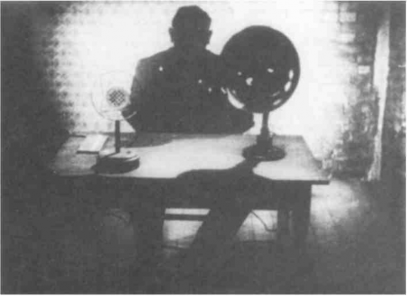

“Language Is Informational and Communicational”
When the schoolmistress instructs her students on a rule of grammar or arithmetic, she is not informing them, any more than she is informing herself when she questions a student. She does not so much instruct as “insign,” give orders or commands. A teacher’s commands are not external or additional to what he or she teaches us. They do not flow from primary significations or result from information: an order always and already concerns prior orders, which is why ordering is redundancy. The compulsory education machine does not communicate information; it imposes upon the child semiotic coordinates possessing all of the dual foundations of grammar (masculine-feminine, singular-plural, noun-verb, subject of the statement-subject of enunciation, etc.). The elementary unit of language — the statement — is the order-word.1 Rather than common sense, a faculty for the centralization of information, we must define an abominable faculty consisting in emitting, receiving, and transmitting order-words. Language is made not to be believed but to be obeyed, and to compel obedience. “The baroness has not the slightest intention of convincing me of her sincerity; she is simply indicating that she prefers to see me pretend to agree.”2 We see this in police or government announcements, which often have little plausibility or truthfulness, but say very clearly what should be observed and retained. The indifference to any kind of credibility exhibited by these announcements often verges on provocation. This is proof that the issue lies elsewhere. Let people say…: that is all language demands. Spengler notes that the fundamental forms of speech are not the statement of a judgment or the expression of a feeling, but “the command, the expression of obedience, the assertion, the question, the affirmation or negation,” very short phrases that command life and are inseparable from enterprises and large-scale projects: “Ready?” “Yes.” “Go ahead.”3 Words are not tools, but we give children language, pens, and notebooks as we give workers shovels and pickaxes. A rule of grammar is a power marker before it is a syntactical marker. The order does not refer to prior significations or to a prior organization of distinctive units. Quite the opposite. Information is only the strict minimum necessary for the emission, transmission, and observation of orders as commands. One must be just informed enough not to confuse “Fire!” with “Fore!” or to avoid the unfortunate situation of the teacher and the student as described by Lewis Carroll (the teacher, at the top of the stairs, asks a question that is passed on by servants, who distort it at each step of the way, and the student, below in the courtyard, returns an answer that is also distorted at each stage of the trip back). Language is not life; it gives life orders. Life does not speak; it listens and waits.4 Every order-word, even a father’s to his son, carries a little death sentence — a Judgment, as Kafka put it.
The hard part is to specify the status and scope of the order-word. It is not a question of the origin of language, since the order-word is only a language-function, a function coextensive with language. If language always seems to presuppose itself, if we cannot assign it a nonlinguistic point of departure, it is because language does not operate between something seen (or felt) and something said, but always goes from saying to saying. We believe that narrative consists not in communicating what one has seen but in transmitting what one has heard, what someone else said to you. Hearsay. It does not even suffice to invoke a vision distorted by passion. The “first” language, or rather the first determination of language, is not the trope or metaphor but indirect discourse. The importance some have accorded metaphor and metonymy proves disastrous for the study of language. Metaphors and metonymies are merely effects; they are a part of language only when they presuppose indirect discourse. There are many passions in a passion, all manner of voices in a voice, murmurings, speaking in tongues: that is why all discourse is indirect, and the translative movement proper to language is that of indirect discourse.5 Benveniste denies that the bee has language, even though it has an organic coding process and even uses tropes. It has no language because it can communicate what it has seen but not transmit what has been communicated to it. A bee that has seen a food source can communicate the message to bees that did not see it, but a bee that has not seen it cannot transmit the message to others that did not see it.6 Language is not content to go from a first party to a second party, from one who has seen to one who has not, but necessarily goes from a second party to a third party, neither of whom has seen. It is in this sense that language is the transmission of the word as order-word, not the communication of a sign as information. Language is a map, not a tracing. But how can the order-word be a function coextensive with language when the order, the command, seems tied to a restricted type of explicit proposition marked by the imperative?
Austin’s famous theses clearly demonstrate that the various extrinsic relations between action and speech by which a statement can describe an action in an indicative mode or incite it in an imperative mode, etc., are not all there is. There are also intrinsic relations between speech and certain actions that are accomplished by sayingthem (the performative: I swear by saying “I swear”), and more generally between speech and certain actions that are accomplished in speaking (the illocutionary: I ask a question by saying “Is … ?” I make a promise by saying “I love you …”; I give a command by using the imperative, etc.). These acts internal to speech, these immanent relations between statements and acts, have been termed implicit or nondiscursive presuppositions, as opposed to the potentially explicit assumptions by which a statement refers to other statements or an external action (Ducrot). The theory of the performative sphere, and the broader sphere of the illocutionary, has had three important and immediate consequences: (1) It has made it impossible to conceive of language as a code, since a code is the condition of possibility for all explanation. It has also made it impossible to conceive of speech as the communication of information: to order, question, promise, or affirm is not to inform someone about a command, doubt, engagement, or assertion but to effectuate these specific, immanent, and necessarily implicit acts. (2) It has made it impossible to define semantics, syntactics, or even phonematics as scientific zones of language independent of pragmatics. Pragmatics ceases to be a “trash heap,” pragmatic determinations cease to be subject to the alternative: fall outside language, or answer to explicit conditions that syntacticize and semanticize pragmatic determinations. Instead, pragmatics becomes the presupposition behind all of the other dimensions and insinuates itself into everything. (3) It makes it impossible to maintain the distinction between language and speech because speech can no longer be defined simply as the extrinsic and individual use of a primary signification, or the variable application of a preexisting syntax. Quite the opposite, the meaning and syntax of language can no longer be defined independently of the speech acts they presuppose.7
It is true that it is still difficult to see how speech acts or implicit presuppositions can be considered a function coextensive with language. It is all the more difficult if one starts with the performative (that which one does by saying it) and moves by extension to the illocutionary (that which one does in speaking). For it is always possible to thwart that move. The performative can be walled in by explaining it by specific syntactic and semantic characteristics avoiding any recourse to a generalized pragmatics. According to Benveniste, for example, the performative relates not to acts but instead to a property ofself-referentiality of terms (the true personal pronouns, I, YOU…, defined as shifters). By this account, a preexistent structure of subjectivity, or intersubjectivity, in language, rather than presupposing speech acts, is adequate to account for them.8 Benveniste thus defines language as communicational rather than informational; this properly linguistic intersubjectivity, or subjectification, explains all the rest, in other words, everything that is brought into being by saying it. The question is whether subjective communication is any better a linguistic notion than ideal information. Oswald Ducrot has set forth the reasons that have led him to reverse Benveniste’s schema: The phenomenon of self-referentiality cannot account for the performative. The opposite is the case; it is “the fact that certain statements are socially devoted to the accomplishment of certain actions” that explains self-referentiality. The performative itself is explained by the illocutionary, not the opposite. It is the illocutionary that constitutes the nondiscursive or implicit presuppositions. And the illocutionary is in turn explained by collective assemblages of enunciation, by juridical acts or equivalents of juridical acts, which, far from depending on subjectification proceedings or assignations of subjects in language, in fact determine their distribution. Communication is no better a concept than information; intersubjectivity gets us no further than signifiance in accounting for these “statements-acts” assemblages that in each language delimit the role and range of subjective morphemes.9 (We will see that the analysis of indirect discourse confirms this point of view since it shows that subjectifications are not primary but result from a complex assemblage.)
We call order-words, not a particular category of explicit statements (for example, in the imperative), but the relation of every word or every statement to implicit presuppositions, in other words, to speech acts that are, and can only be, accomplished in the statement. Order-words do not concern commands only, but every act that is linked to statements by a “social obligation.” Every statement displays this link, directly or indirectly. Questions, promises, are order-words. The only possible definition of language is the set of all order-words, implicit presuppositions, or speech acts current in a language at a given moment.
The relation between the statement and the act is internal, immanent, but it is not one of identity. Rather, it is a relation of redundancy. The order-word itself is the redundancy of the act and the statement. Newspapers, news, proceed by redundancy, in that they tell us what we “must” think, retain, expect, etc. Language is neither informational nor communica-tional. It is not the communication of information but something quite different: the transmission of order-words, either from one statement to another or within each statement, insofar as each statement accomplishes an act and the act is accomplished in the statement. The most general schema of information science posits in principle an ideal state of maximum information and makes redundancy merely a limitative condition serving to decrease this theoretical maximum in order to prevent it from being drowned out by noise. We are saying that the redundancy of the order-word is instead primary and that information is only the minimal condition for the transmission of order-words (which is why the opposition to be made is not between noise and information but between all the indisciplines at work in language, and the order-word as discipline or “grammaticality”). Redundancy has two forms, frequency and resonance; the first concerns the signifiance of information, the second (I = I) concerns the subjectivity of communication. It becomes apparent that information and communication, and even signifiance and subjectification, are subordinate to redundancy. A distinction is sometimes made between information and communication; some authors envision an abstract signifiance of information and an abstract subjectification of communication. None of this, however, yields an implicit or primary form of language. There is no signifiance independent of dominant significations, nor is there subjectification independent of an established order of subjection. Both depend on the nature and transmission of order-words in a given social field.
There is no individual enunciation. There is not even a subject of enunciation. Yet relatively few linguists have analyzed the necessarily social character of enunciation.’ ° The problem is that it is not enough to establish that enunciation has this social character, since it could be extrinsic; therefore too much or too little is said about it. The social character of enunciation is intrinsically founded only if one succeeds in demonstrating how enunciation in itself implies collective assemblages. It then becomes clear that the statement is individuated, and enunciation subjectified, only to the extent that an impersonal collective assemblage requires it and determines it to be so. It is for this reason that indirect discourse, especially “free” indirect discourse, is of exemplary value: there are no clear, distinctive contours; what comes first is not an insertion of variously individuated statements, or an interlocking of different subjects of enunciation, but a collective assemblage resulting in the determination of relative subjectification proceedings, or assignations of individuality and their shifting distributions within discourse. Indirect discourse is not explained by the distinction between subjects; rather, it is the assemblage, as it freely appears in this discourse, that explains all the voices present within a single voice, the glimmer of girls in a monologue by Charlus, the languages in a language, the order-words in a word. The American murderer “Son of Sam” killed on the prompting of an ancestral voice, itself transmitted through the voice of a dog. The notion of collective assemblage of enunciation takes on primary importance since it is what must account for the social character. We can no doubt define the collective assemblage as the redundant complex of the act and the statement that necessarily accomplishes it. But this is still only a nominal definition; it does not even enable us to justify our previous position that redundancy is irreducible to a simple identity (or that there is no simple identity between the statement and the act). If we wish to move to a real definition of the collective assemblage, we must ask of what consist these acts immanent to language that are in redundancy with statements or constitute order-words.
These acts seem to be defined as the set of all incorporeal transformations current in a given society and attributed to the bodies of that society. We may take the word “body” in its broadest sense (there are mental bodies, souls are bodies, etc.). We must, however, distinguish between the actions and passions affecting those bodies, and acts, which are only noncorporeal attributes or the “expressed” of a statement. When Ducrot asks what an act consists of, he turns precisely to the juridical assemblage, taking the example of the judge’s sentence that transforms the accused into a convict. In effect, what takes place beforehand (the crime of which someone is accused), and what takes place after (the carrying out of the penalty), are actions-passions affecting bodies (the body of the property, the body of the victim, the body of the convict, the body of the prison); but the transformation of the accused into a convict is a pure instantaneous act or incorporeal attribute that is the expressed of the judge’s sentence.11 Peace and war are states or interminglings of very different kinds of bodies, but the declaration of a general mobilization expresses an instantaneous and incorporeal transformation of bodies. Bodies have an age, they mature and grow old; but majority, retirement, any given age category, are incorporeal transformations that are immediately attributed to bodies in particular societies. “You are no longer a child”: this statement concerns an incorporeal transformation, even if it applies to bodies and inserts itself into their actions and passions. The incorporeal transformation is recognizable by its instantaneousness, its immediacy, by the simultaneity of the statement expressing the transformation and the effect the transformation produces; that is why order-words are precisely dated, to the hour, minute, and second, and take effect the moment they are dated. Love is an intermingling of bodies that can be represented by a heart with an arrow through it, by a union of souls, etc., but the declaration “I love you” expresses a noncor-poreal attribute of bodies, the lover’s as well as that of the loved one. Eating bread and drinking wine are interminglings of bodies; communing with Christ is also an intermingling of bodies, properly spiritual bodies that are no less “real” for being spiritual. But the transformation of the body of the bread and the wine into the body and blood of Christ is the pure expressed of a statement attributed to the bodies. In an airplane hijacking, the threat of a hijacker brandishing a revolver is obviously an action; so is the execution of the hostages, if it occurs. But the transformation of the passengers into hostages, and of the plane-body into a prison-body, is an instantaneous incorporeal transformation, a “mass media act” in the sense in which the English speak of “speech acts.” The order-words or assemblages of enunciation in a given society (in short, the illocutionary) designate this instantaneous relation between statements and the incorporeal transformations or noncorporeal attributes they express.
The instantaneousness of the order-word, which can be projected to infinity, placed at the origin of society, is quite strange; for Rousseau, for example, the passage from the state of nature to the social state is like a leap in place, an incorporeal transformation occurring at zero hour. Real history undoubtedly recounts the actions and passions of the bodies that develop in a social field; it communicates them in a certain fashion; but it also transmits order-words, in other words, pure acts intercalated into that development. History will never be rid of dates. Perhaps economics or financial analysis best demonstrates the presence and instantaneousness of these decisive acts in an overall process (that is why statements definitely do not belong to ideology, but are already at work in what is supposedly the domain of the economic base). The galloping inflation in Germany after 1918 was a crisis affecting the monetary body, and many other bodies besides; but the sum of the “circumstances” suddenly made possible a semiotic transformation that, although indexed to the body of the earth and material assets, was still a pure act or incorporeal transformation — November 20, 1923…’2
The assemblages are in constant variation, are themselves constantly subject to transformations. First, the circumstances must be taken into account: Benveniste clearly demonstrates that a performative statement is nothing outside of the circumstances that make it performative. Anybody can shout, “I declare a general mobilization,” but in the absence of an effectuated variable giving that person the right to make such a statement it is an act of peurility or insanity, not an act of enunciation. This is also true of “I love you,” which has neither meaning nor subject nor addressee outside of circumstances that not only give it credibility but make it a veritable assemblage, a power marker, even in the case of an unhappy love (it is still by a will to power that one obeys…). The general term “circumstances” should not leave the impression that it is a question only of external circumstances. “I swear” is not the same when said in the family, at school, in a love affair, in a secret society, or in court: it is not the same thing, and neither is it the same statement; it is not the same bodily situation, and neither is it the same incorporeal transformation. The transformation applies to bodies but is itself incorporeal, internal to enunciation. There are variables of expression that establish a relation between language and the outside, but precisely because they are immanent to language. As long as linguistics confines itself to constants, whether syntactical, morphological, or phonological, it ties the statement to a signifier and enunciation to a subject and accordingly botches the assemblage; it consigns circumstances to the exterior, closes language in on itself, and makes pragmatics a residue. Pragmatics, on the other hand, does not simply appeal to external circumstances: it brings to light variables of expression or of enunciation that are so many internal reasons for language not to close itself off. As Volosinov [Bakhtin] says, as long as linguistics extracts constants, it is incapable of helping us understand how a single word can be a complete enunciation; there must be “an extra something” that “remains outside of the scope of the entire set of linguistic categories and definitions,” even though it is still entirely within the purview of the theory of enunciation or language.’3 The order-word is precisely that variable that makes the word as such an enunciation. The instantaneousness of the order-word, its immediacy, gives it a power of variation in relation to the bodies to which the transformation is attributed.
Pragmatics is a politics of language. A study such as Jean-Pierre Faye’s on the constitution of Nazi statements in the German social field is in this respect exemplary (and cannot be directly transferred to the constitution of Fascist statements in Italy). Transformational research of this kind is concerned with the variation of the order-words and noncorporeal attributes linked to social bodies and effectuating immanent acts. We may take as another example, under different conditions, the formation of a properly Leninist type of statement in Soviet Russia, basing ourselves on a text by Lenin entitled “On Slogans” (1917). This text constituted an incorporeal transformation that extracted from the masses a proletarian class as an assemblage of enunciation before the conditions were present for the proletariat to exist as a body. A stroke of genius from the First Marxist International, which “invented” a new type of class: Workers of the world, unite!14 Taking advantage of the break with the Social Democrats, Lenin invented or decreed yet another incorporeal transformation that extracted from the proletarian class a vanguard as an assemblage of enunciation and was attributed to the “Party,” a new type of party as a distinct body, at the risk of falling into a properly bureaucratic system of redundancy. The Leninist wager, an act of audacity? Lenin declared that the slogan (mot d’ordre) “All power to the Soviets” was valid only from the 27th of February to the 4th of July for the peacetime development of the Revolution, and no longer held in the state of war; the passage from peace to war implied this transformation, not just from the masses to a guiding proletariat, but from the proletariat to a directing vanguard. July 4 exactly the power of the Soviets came to an end. All of the external circumstances can be assigned: the war as well as the insurrection that forced Lenin to flee to Finland. But the fact remains that the incorporeal transformation was uttered on the 4th of July, prior to the organization of the body to which it would be attributed, namely, the Party itself. “Every particular slogan must be deduced from the totality of the specific features of a definite political situation.”15 If the objection is leveled that these specific features pertain to politics and not linguistics, it must be observed how thoroughly politics works language from within, causing not only the vocabulary but also the structure and all of the phrasal elements to vary as the order-words change. A type of statement can be evaluated only as a function of its pragmatic implications, in other words, in relation to the implicit presuppositions, immanent acts, or incorporeal transformations it expresses and which introduce new configurations of bodies. True intuition is not a judgment of grammaticality but an evaluation of internal variables of enunciation in relation to the aggregate of the circumstances.
We have gone from explicit commands to order-words as implicit presuppositions; from order-words to the immanent acts or incorporeal transformations they express; and from there to the assemblages of enunciation whose variables they are. To the extent these variables enter at a given moment into determinable relations, the assemblages combine in a regime of signs or a semiotic machine. It is obvious that a society is plied by several semiotics, that its regimes are in fact mixed. Moreover, at a later time there will arise new order-words that will modify the variables and will not yet be part of a known regime. Thus the order-word is redundancy in several ways: as a function of the process of transmission essential to it, and in itself, from the time it is emitted, in its “immediate” relation with the act or transformation it effectuates. The order-word is already redundancy even when it is in rupture with a particular semiotic. That is why every statement of a collective assemblage of enunciation belongs to indirect discourse. Indirect discourse is the presence of a reported statement within the reporting statement, the presence of an order-word within the word. Language in its entirety is indirect discourse. Indirect discourse in no way supposes direct discourse; rather, the latter is extracted from the former, to the extent that the operations of signifiance and proceedings of subjec-tification in an assemblage are distributed, attributed, and assigned, or that the variables of the assemblage enter into constant relations, however temporarily. Direct discourse is a detached fragment of a mass and is born of the dismemberment of the collective assemblage; but the collective assemblage is always like the murmur from which I take my proper name, the constellation of voices, concordant or not, from which I draw my voice. I always depend on a molecular assemblage of enunciation that is not given in my conscious mind, any more than it depends solely on my apparent social determinations, which combine many heterogeneous regimes of signs. Speaking in tongues. To write is perhaps to bring this assemblage of the unconscious to the light of day, to select the whispering voices, to gather the tribes and secret idioms from which I extract something I call my Self (Moi). I is an order-word. A schizophrenic said: “I heard voices say: he is conscious of life.”16 In this sense, there is indeed a schizophrenic cogito, but it is a cogito that makes self-consciousness the incorporeal transformation of an order-word, or a result of indirect discourse. My direct discourse is still the free indirect discourse running through me, coming from other worlds or other planets. That is why so many artists and writers have been tempted by the seance table. When we ask what faculty is specific to the order-word, we must indeed attribute to it some strange characteristics: a kind of instantaneousness in the emission, perception, and transmission of order-words; a wide variability, and a power of forgetting permitting one to feel absolved of the order-words one has followed and then abandoned in order to welcome others; a properly ideal or ghostly capacity for the apprehension of incorporeal transformations; an aptitude for grasping language as an immense indirect discourse.’7 The faculty of the cuer and the cued, of the song that always holds a tune within a tune in a relation of redundancy; a faculty that is in truth mediumistic, glossolalic, or xenoglossic.
Let us return to the question of how this defines a language-function, a function coextensive with language. It is evident that order-words, collective assemblages, or regimes of signs cannot be equated with language. But they effectuate its condition of possibility (the superlinearity of expression), they fulfill in each instance this condition of possibility; without them, language would remain a pure virtuality (the superlinear character of indirect discourse). Doubtless, the assemblages vary, undergo transformation. But they do not necessarily vary by language, they do not correspond to the various languages. A language seems to be defined by the syntactical, semantic, phonological constants in its statements; the collective assemblage, on the contrary, concerns the usage of these constants in relation to variables internal to enunciation itself (variables of expression, immanent acts, or incorporeal transformations). Different constants, different languages, may have the same usage; the same constants in a given language may have different usages, successively or even simultaneously. We cannot content ourselves with a duality between constants as linguistic factors that are explicit or potentially explicit, and variables as extrinsic, nonlinguistic factors. For the pragmatic variables of usage are internal to enunciation and constitute the implicit presuppositions of language. Thus if the collective assemblage is in each instance coextensive with the linguistic system considered, and to language as a whole, it is because it expresses the set of incorporeal transformations that effectuate the condition of possibility of language and utilize the elements of the linguistic system. The language-function thus defined is neither informational nor communi-cational; it has to do neither with signifying information nor with intersubjective communication. And it is useless to abstract a signifiance outside information, or a subjectivity outside communication. For the subjectification proceedings and movement of signifiance relate to regimes of signs, or collective assemblages. The language-function is the transmission of order-words, and order-words relate to assemblages, just as assemblages relate to the incorporeal transformations constituting the variables of the function. Linguistics is nothing without a pragmatics (semiotic or political) to define the effectuation of the condition of possibility of language and the usage of linguistic elements.
“There Is an Abstract Machine of Language That Does Not Appeal to Any ‘Extrinsic’ Factor”
If in a social field we distinguish the set of corporeal modifications and the set of incorporeal transformations, we are presented, despite the variety in each of the sets, with two formalizations, one of content, the other of expression. For content is not opposed to form but has its own formalization: the hand-tool pole, or the lesson of things. It is, however, opposed to expression, inasmuch as expression also has its own formalization: the face-language pole, the lesson of signs. Precisely because content, like expression, has a form of its own, one can never assign the form of expression the function of simply representing, describing, or averring a corresponding content: there is neither correspondence nor conformity. The two formalizations are not of the same nature; they are independent, heterogeneous. The Stoics were the first to theorize this independence: they distinguished between the actions and passions of bodies (using the word “body” in the broadest sense, as applying to any formed content) and incorporeal acts (the “expressed” of the statements). The form of expression is constituted by the warp of expresseds, and the form of content by the woof of bodies. When knife cuts flesh, when food or poison spreads through the body, when a drop of wine falls into water, there is an intermingling of bodies; but the statements, “The knife is cutting the flesh,” “I am eating,” “The water is turning red,” express incorporeal transformations of an entirely different nature (events).18 The genius of the Stoics was to have taken this paradox as far as it could go, up to the point of insanity and cynicism, and to have grounded it in the most serious of principles: their reward was to be the first to develop a philosophy of language.
The paradox gets us nowhere unless, like the Stoics, we add that incorporeal transformations, incorporeal attributes, apply to bodies, and only to bodies. They are the expressed of statements but are attributed to bodies. The purpose is not to describe or represent bodies; bodies already have proper qualities, actions and passions, souls, in short forms, which are themselves bodies. Representations are bodies too! If noncorporeal attributes apply to bodies, if there are good grounds for making a distinction between the incorporeal expressed “to become red” and the corporeal quality “red,” etc., it has nothing to with representation. We cannot even say that the body or state of things is the “referent” of the sign. In expressing the noncorporeal attribute, and by that token attributing it to the body, one is not representing or referring but intervening in a way; it is a speech act. The independence of the two kinds of forms, forms of expression and forms of content, is not contradicted but confirmed by the fact that the expressions or expresseds are inserted into or intervene in contents, not to represent them but to anticipate them or move them back, slow them down or speed them up, separate or combine them, delimit them in a different way. The warp of the instantaneous transformations is always inserted into the woof of the continuous modifications. (Hence the significance of dates for the Stoics. From what moment can it be said that someone is bald? In what sense does a statement of the type “There will be a naval battle tomorrow” constitute a date or order-word?) The night of August 4, July 4,1917, November 20, 1923: What incorporeal transformation is expressed by these dates, incorporeal yet attributed to bodies, inserted into them? The independence of the form of expression and the form of content is not the basis for a parallelism between them or a representation of one by the other, but on the contrary a parceling of the two, a manner in which expressions are inserted into contents, in which we ceaselessly jump from one register to another, in which signs are at work in things themselves just as things extend into or are deployed through signs. An assemblage of enunciation does not speak “of” things; it speaks on the same level as states of things and states of content. So that the same x, the same particle, may function either as a body that acts and undergoes actions or as a sign constituting an act or order-word, depending on which form it is taken up by (for example, the theoretico-experimental aggregate of physics). In short, the functional independence of the two forms is only the form of their reciprocal presupposition, and of the continual passage from one to the other. We are never presented with an interlinkage of order-words and a causality of contents each in its own right; nor do we see one represent the other, with the second serving as referent. On the contrary, the independence of the two lines is distributive, such that a segment of one always forms a relay with a segment of the other, slips into, introduces itself into the other. We constantly pass from order-words to the “silent order” of things, as Foucault puts it, and vice versa.
But when we use a word as vague as “intervene,” when we say that expressions intervene or insert themselves into contents, are we not still prey to a kind of idealism in which the order-word instantaneously falls from the sky? What we must determine is not an origin but points of intervention or insertion in the framework of the reciprocal presupposition of the two forms. Both forms of content and forms of expression are inseparable from a movement of deterritorialization that carries them away. Both expression and content are more or less deterritorialized, relatively deterritorialized, according to the particular state of their form. In this respect, one cannot posit a primacy of expression over content, or content over expression. Sometimes the semiotic components are more deterritorialized than the material components, and sometimes the reverse. For example, a mathematical complex of signs may be more deterritorialized than a set of particles; conversely, the particles may have experimental effects that deterritorialize the semiotic system. A criminal action may be deterritorializing in relation to the existing regime of signs (the earth cries for revenge and crumbles beneath my feet, my offense is too great); but the sign that expresses the act of condemnation may in turn be deterritorializing in relation to all actions and reactions (“a fugitive and a vagabond shalt thou be in the earth” [Gen. 4:12], you cannot even be killed). In short, there are degrees of deterritorialization that quantify the respective forms and according to which contents and expression are conjugated, feed into each other, accelerate each other, or on the contrary become stabilized and perform a reterritorialization. What we call circumstances or variables are these degrees themselves. There are variables of content, or proportions in the interminglings or aggregations of bodies, and there are variables of expression, factors internal to enunciation. Germany, toward November 20, 1923: on the one hand, the deterritorializing inflation of the monetary body and, on the other, in response to the inflation, a semiotic transformation of the reichsmark into the rentenmark, making possible a reterritorialization. Russia, toward July 4,1917: on the one hand proportions of a state of “bodies” Soviets-provisional government, and on the other the elaboration of a Bolshevik incorporeal semiotic, accelerating things and contributing to the action of the detonating body of the Party. In short, the way an expression relates to a content is not by uncovering or representing it. Rather, forms of expression and forms of content communicate through a conjunction of their quanta of relative deterritorialization, each intervening, operating in the other.
We may draw some general conclusions on the nature of Assemblages from this. On a first, horizontal, axis, an assemblage comprises two segments, one of content, the other of expression. On the one hand it is a machinic assemblage of bodies, of actions and passions, an intermingling of bodies reacting to one another; on the other hand it is a collective assemblage of enunciation, of acts and statements, of incorporeal transformations attributed to bodies. Then on a vertical axis, the assemblage has both territorial sides, or reterritorialized sides, which stabilize it, and cutting edges of deterritorialization, which carry it away. No one is better than Kafka at differentiating the two axes of the assemblage and making them function together. On the one hand, the ship-machine, the hotel-machine, the circus-machine, the castle-machine, the court-machine, each with its own intermingled pieces, gears, processes, and bodies contained in one another or bursting out of containment (see the head bursting through the roof)19 On the other hand, the regime of signs or of enunciation: each regime with its incorporeal transformations, acts, death sentences and judgments, proceedings, “law.” It is obvious that statements do not represent machines: the Stoker’s discourse does not describe stoking as a body; it has its own form, and a development without resemblance.20 Yet it is attributed to bodies, to the whole ship as a body. A discourse of submission to order-words; a discourse of discussion, claims, accusation, and defense. On the second axis, what is compared or combined of the two aspects, what always inserts one into the other, are the sequenced or conjugated degrees of deterritorialization, and the operations of reterritorialization that stabilize the aggregate at a given moment. K., the K.-function, designates the line of flight or deterritorialization that carries away all of the assemblages but also undergoes all kinds of reterritorializations and redundancies — redundancies of childhood, village-life, love, bureaucracy, etc.
The tetravalence of the assemblage. Taking the feudal assemblage as an example, we would have to consider the interminglings of bodies defining feudalism: the body of the earth and the social body; the body of the overlord, vassal, and serf; the body of the knight and the horse and their new relation to the stirrup; the weapons and tools assuring a symbiosis of bodies — a whole machinic assemblage. We would also have to consider statements, expressions, the juridical regime of heraldry, all of the incorporeal transformations, in particular, oaths and their variables (the oath of obedience, but also the oath of love, etc.): the collective assemblage of enunciation. On the other axis, we would have to consider the feudal territorialities and reterritorializations, and at the same time the line of deterritorialization that carries away both the knight and his mount, statements and acts. We would have to consider how all this combines in the Crusades.
It would be an error to believe that content determines expression by causal action, even if expression is accorded the power not only to “reflect” content but to react upon it in an active way. This kind of ideological conception of the statement, which subordinates it to a primary economic content, runs into all kinds of difficulties inherent to dialectics. First, although it may be possible to conceive of a causal action moving from content to expression, the same cannot be said for the respective forms, the form of content and the form of expression. We must recognize that expression is independent and that this is precisely what enables it to react upon contents. This independence, however, has been poorly conceived. If contents are said to be economic, the form of content cannot be said to be economic and is reduced to a pure abstraction, namely, the production of goods and the means of that production considered in themselves. Similarly, if expressions are said to be ideological, the form of expression is not said to be ideological and is reduced to language as abstraction, as the availability of a good shared by all. Those who take this approach claim to characterize contents and expressions by all the struggles and conflicts pervading them in two different forms, but these forms themselves are exempt from struggle and conflict, and the relation between them remains entirely indeterminate.21 The only way to define the relation is to revamp the theory of ideology by saying that expressions and statements intervene directly in productivity, in the form of a production of meaning or sign-value. The category of production doubtless has the advantage of breaking with schemas of representation, information, and communication. But is it any more adequate than these schemas? Its application to language is very ambiguous in that it appeals to an ongoing dialectical miracle of the transformation of matter into meaning, content into expression, the social process into a signifying system.
We think the material or machinic aspect of an assemblage relates not to the production of goods but rather to a precise state of intermingling of bodies in a society, including all the attractions and repulsions, sympathies and antipathies, alterations, amalgamations, penetrations, and expansions that affect bodies of all kinds in their relations to one another. What regulates the obligatory, necessary, or permitted interminglings of bodies is above all an alimentary regime and a sexual regime. Even technology makes the mistake of considering tools in isolation: tools exist only in relation to the interminglings they make possible or that make them possible. The stirrup entails a new man-horse symbiosis that at the same time entails new weapons and new instruments. Tools are inseparable from symbioses or amalgamations defining a Nature-Society machinic assemblage. They presuppose a social machine that selects them and takes them into its “phylum”: a society is defined by its amalgamations, not by its tools. Similarly, the semiotic or collective aspect of an assemblage relates not to a productivity of language but to regimes of signs, to a machine of expression whose variables determine the usage of language elements. These elements do not stand on their own any more than tools do. There is a primacy of the machinic assemblage of bodies over tools and goods, a primacy of the collective assemblage of enunciation over language and words. The articulation of the two aspects of the assemblage is effected by the movements of deterritorialization that quantify their forms. That is why a social field is defined less by its conflicts and contradictions than by the lines of flight running through it. An assemblage has neither base nor superstructure, neither deep structure nor superficial structure; it flattens all of its dimensions onto a single plane of consistency upon which reciprocal presuppositions and mutual insertions play themselves out.
The other mistake (which is combined with the first as needed) is to believe in the adequacy of the form of expression as a linguistic system. This system may be conceived as a signifying phonological structure, or as a deep syntactical structure. In either case, it is credited with engendering semantics, therefore of fulfilling expression, whereas contents are relegated to the arbitrariness of a simple “reference” and pragmatics to the exteriority of nonlinguistic factors. What all of these undertakings have in common is to erect an abstract machine of language, but as a synchronic set of constants. We will not object that the machine thus conceived is too abstract. On the contrary, it is not abstract enough, it remains “linear.” It remains on an intermediate level of abstraction allowing it to consider linguistic factors in themselves, independently of nonlinguistic factors, and to treat those linguistic factors as constants. But if the abstraction is taken further, one necessarily reaches a level where the pseudoconstants of language are superseded by variables of expression internal to enunciation itself; these variables of expression are then no longer separable from the variables of content with which they are in perpetual interaction. If the external pragmatics of nonlinguistic factors must be taken into consideration, it is because linguistics itself is inseparable from an internal pragmatics involving its own factors. It is not enough to take into account the signified, or even the referent, because the very notions of signification and reference are bound up with a supposedly autonomous and constant structure. There is no use constructing a semantics, or even recognizing a certain validity to pragmatics, if they are still pretreated by a phonological or syntactical machine. For a true abstract machine pertains to an assemblage in its entirety: it is defined as the diagram of that assemblage. It is not language based but diagrammatic and superlinear. Content is not a signified nor expression a signifier; rather, both are variables of the assemblage. We get nowhere until the pragmatic, but also semantic, syntactical, and phonological determinations are directly linked to the assemblages of enunciation upon which they depend. Chomsky’s abstract machine retains an arborescent model and a linear ordering of linguistic elements in sentences and sentence combinations. But as soon as pragmatic values or internal variables are taken into account, in particular with respect to indirect discourse, one is obliged to bring “hypersentences” into play or to construct “abstract objects” (incorporeal transformations). This implies superlinearity, in other words, a plane whose elements no longer have a fixed linear order: the rhizome model.22 From this standpoint, the inter-penetration of language and the social field and political problems lies at the deepest level of the abstract machine, not at the surface. The abstract machine as it relates to the diagram of the assemblage is never purely a matter of language, except for lack of sufficient abstraction. It is language that depends on the abstract machine, not the reverse. At most, we may distinguish in the abstract machine two states of the diagram, one in which variables of content and expression are distributed according to their heterogeneous forms in reciprocal presupposition on a plane of consistency, and another in which it is no longer even possible to distinguish between variables of content and expression because the variability of that same plane has prevailed over the duality of forms, rendering them “indiscernible.” (The first state relates to still relative movements of deterritori-alization; in the second, an absolute threshold of deterritorialization has been reached.)
III. “There Are Constants or Universals of Language That Enable Us to Define It as a Homogeneous System”
The question of structural invariants — and the very idea of structure is inseparable from invariants, whether atomic or relational — is essential to linguistics. It is what allows linguistics to claim a basis in pure scientificity, to be nothing but science … safe from any supposedly external or pragmatic factor. The question of invariants assumes several closely connected forms: (1) the constants of a language (phonological, by commutativity; syntactical, by transformativity; semantic, by generativity); (2) the universals of language (by decomposition of the phoneme into distinctive features; of syntax into fundamental constituents; of signification into minimal semantic elements); (3) trees linking constants to one another, with binary relations between trees (see Chomsky’s linear arborescent method); (4) competence, in principle coextensive with language and defined by judgments of grammaticality; (5) homogeneity, bearing on elements and relations as well as intuitive judgments; (6) synchrony, which erects an “in-itself’ and a “for-itself’ of language, perpetually moving from the objective system to the subjective consciousness that apprehends its principle (that of the linguist himself or herself).
One can juggle all of these factors, subtract some or even add new ones. They go together, however, because the essentials of all of them are present on the level of any one. For example, the distinction between speech and language is recapitulated in the distinction between competence and performance, but at the level of grammaticality. If it is objected that the distinction between competence and performance is entirely relative (a linguistic competence can be economic, religious, political, or aesthetic, etc.; the teaching competence of a grade school teacher may be only a performance in relation to the judgment of an inspector or government regulations), linguists respond that they are willing to multiply levels of competence, and even to introduce pragmatic values into the system. Brekle, for example, proposes adding an “idiosyncratic performatory competence” factor tied to a whole constellation of linguistic, psychological, or sociological factors. But what use is this injection of pragmatics if pragmatics is in turn considered to have constants or universals of its own? And in what way are expressions like “I,” “promise,” “know” more universal than “greet,” “name,” or “condemn”?23 Similarly, when efforts are made to make Chomsky’s trees bud and to shatter linear order, as long as the pragmatic components marking the ruptures are placed above the tree or effaced from the derivation nothing has really been accomplished, one has failed to constitute a rhizome.24 In truth, the nature of the abstract machine is the most general problem: there is no reason to tie the abstract to the universal or the constant, or to efface the singularity of abstract machines insofar as they are built around variables and variations.
The debate between Chomsky and Labov will give us a better understanding of what the issue is. Every language is an essentially heterogeneous reality; linguists know this and say so. But this is a factual remark. Chomsky asks only that one carve from this aggregate a homogeneous or standard system as a basis for abstraction or idealization, making possible a scientific study of principles. Limiting oneself to standard English is thus not the issue, for even a linguist who studies Black English or the English of the ghettos is obliged to extract a standard system guaranteeing the constancy and homogeneity of the object under study (no science can operate any other way, they say). Thus Chomsky pretends to believe that by asserting his interest in the variable features of language, Labov is situating himself in a de facto pragmatics external to linguistics.25 Labov, however, has other ambitions. When he brings to light lines of inherent variation, he does not see them simply as “free variants” pertaining to pronunciation, style, or nonpertinent features that lie outside the system and leave the homogeneity of the system intact; neither does he see them as a de facto mix between two systems, each homogeneous in its own right, as if the speaker moved from one to the other. He refuses the alternative linguistics set up for itself: assigning variants to different systems, or relegating them to a place outside the structure. It is the variation itself that is systematic, in the sense in which musicians say that “the theme is the variation.” Labov sees variation as a de jure component affecting each system from within, sending it cascading or leaping on its own power and forbidding one to close it off, to make it homogeneous in principle. Labov does consider variables of all kinds, phonetic, phonological, syntactical, semantic, stylistic. Yet it would seem difficult to accuse him of missing the distinction between the de jure and the de facto — or between linguistics and stylistics, or synchrony and diachrony, or pertinent and nonpertinent features, or competence and performance, or the grammaticality of language and the agrammaticality of speech. Although this may be hardening his positions, we would say rather that Labov proposes a different distribution of the de facto and the de jure, and especially a different conception of the de jure itself and of abstraction. He takes the example of a young black person who, in a very short series of phrases, seems to pass from the Black English system to the standard system eighteen times. Is it not the abstract distinction between the two systems that proves arbitrary and insufficient? For the majority of the forms belongs to one or the other only by virtue of the fortuities of a given sequence. Must it not be admitted that every system is in variation and is defined not by its constants and homogeneity but on the contrary by a variability whose characteristics are immanent, continuous, and regulated in a very specific mode (variable or optional rules)?25
How can we conceptualize this continuous variation at work within a language, even if it means overstepping the limits Labov sets for himself as well as the conditions of scientificity invoked by linguistics? In the course of a single day, an individual repeatedly passes from language to language. He successively speaks as “father to son” and as a boss; to his lover, he speaks an infantilized language; while sleeping he is plunged into an oniric discourse, then abruptly returns to a professional language when the telephone rings. It will be objected that these variations are extrinsic, that it is still the same language. But that is to prejudge the question. First, it is not certain that the phonology is the same, nor the syntax, nor the semantics. Second, the whole question is whether this supposedly identical language is defined by invariants or, on the contrary, by the line of continuous variation running through it. Some linguists have suggested that linguistic change occurs less by systemic rupture than by a gradual modification of frequency, by a coexistence and continuity of different usages. Take as an example the statement, “I swear!” It is a different statement depending on whether it is said by a child to his or her father, by a man in love to his loved one, or by a witness before the court. These are like three sequences. (Or Messiaen’s four “amen”s stretched over seven sequences.) Once again, there is no reason to say that the variables are merely situational, and that the statement remains constant in principle. Not only are there as many statements as there are effectuations, but all of the statements are present in the effectuation of one among them, so that the line of variation is virtual, in other words, real without being actual, and consequently continuous regardless of the leaps the statement makes. To place the statement in continuous variation is to send it through all the prosodic, semantic, syntactical, and phonological variables that can affect it in the shortest moment of time (the smallest interval). Build the continuum of “I swear!” with the corresponding transformations. This is the standpoint of pragmatics, but a pragmatics internal to language, immanent, including variations of linguistic elements of all kinds. For example, Kafka’s line of the three proceedings: the father’s proceedings in the family; the engagement proceedings at the hotel; and the court proceedings. There is a constant tendency to seek a “reduction”: everything is explained by the situation of the child in relation to its father, or of the man in relation to castration, or of the citizen in relation to the law. But this is to content oneself with extracting a pseudoconstant of content, which is no better than extracting a pseudoconstant of expression. Placing-in-variation allows us to avoid these dangers, because it builds a continuum or medium without beginning or end. Continuous variation should not be confused with the continuous or discontinuous character of the variable itself: the order-word, a continuous variation for a discontinuous variable … A variable can be continuous over a portion of its trajectory, then leap or skip, without that affecting its continuous variation; what this does is impose an absent development as an “alternative continuity” that is virtual yet real.
A constant or invariant is defined less by its permanence and duration than by its function as a center, if only relative. In the tonal or diatonic system of music, laws of resonance and attraction determine centers valid for all modes and endowed with stability and attractive power (pouvoir). These centers therefore organize distinct, distinctive, forms that are clearly established for a certain amount of time: a linear, codified, centered system of the arborescent type. It is true that the minor “mode” gives tonal music a decentered, runaway, fugitive character due to the nature of its intervals and the lesser stability of its chords. This mode thus has the ambiguity of undergoing operations that align it to a major model or standard at the same time as it continues to display a certain modal power (puissance) irreducible to tonality, as though music set out on a journey and garnered all resurgences, phantoms of the Orient, imaginary lands, traditions from all over. But temperament, tempered chromaticism has an even greater ambiguity: stretching the action of the center to the most distant tones, but also preparing the disaggregation of the central principle, replacing the centered forms of continuous development with a form that constantly dissolves and transforms itself. When development subordinates form and spans the whole, as in Beethoven, variation begins to free itself and becomes identified with creation. But when chromaticism is unleashed, becomes a generalized chromaticism, turns back against temperament, affecting not only pitches but all sound components — durations, intensities, timbre, attacks — it becomes impossible to speak of a sound form organizing matter; it is no longer even possible to speak of a continuous development of form. Rather, it is a question of a highly complex and elaborate material making audible nonsonorous forces. The couple matter-form is replaced by the coupling material-forces. The synthesizer has taken the place of the old “a priori synthetic judgment,” and all functions change accordingly. By placing all its components in continuous variation, music itself becomes a superlinear system, a rhizome instead of a tree, and enters the service of a virtual cosmic continuum of which even holes, silences, ruptures, and breaks are a part. Thus the important thing is certainly not to establish a pseudobreak between the tonal system and atonal music; the latter, on the contrary, in breaking away from the tonal system, only carried temperament to its ultimate conclusion (although no Viennese stopped there). The essential thing is almost the opposite movement: the ferment in the tonal system itself (during much of the nineteenth and twentieth centuries) that dissolved temperament and widened chromaticism while preserving a relative tonality, which reinvented new modalities, brought a new amalgamation of major and minor, and in each instance conquered realms of continuous variation for this variable or that. This ferment came to the forefront and made itself heard in its own right; and, through the molecular material thus wrought, it made audible the nonsonorous forces of the cosmos that have always agitated music — a bit of Time in the pure state,27 a grain of absolute Intensity… The words “tonal,” “modal,” “atonal” do not mean much. Music is not alone in being art as cosmos and in drawing the virtual lines of an infinite variation.
Once again, the objection will be raised that music is not a language, that the components of sound are not pertinent features of language, that there is no correspondence between the two. We are not suggesting any correspondence. We keep asking that the issue be left open, that any presupposed distinction be rejected. This especially applies to the language-speech distinction, which is used to relegate all kinds of variables at work within expression and enunciation to a position outside language. The Voice-Music relation proposed by Jean-Jacques Rousseau, on the other hand, could have taken not only phonetics and prosody but all of linguistics in a different direction. The voice in music has always been a privileged axis of experimentation, playing simultaneously on language and sound. Music has linked the voice to instruments in various ways; but as long as the voice is song, its main role is to “hold” sound, it functions as a constant circumscribed on a note and accompanied by the instrument. Only when the voice is tied to timbre does it reveal a tessitura that renders it heterogeneous to itself and gives it a power of continuous variation: it is then no longer accompanied, but truly “machined,” it belongs to a musical machine that prolongs or superposes on a single plane parts that are spoken, sung, achieved by special effects, instrumental, or perhaps electronically generated. This is the sound plane of a generalized “glissando” implying the constitution of a statistical space in which each variable has, not an average value, but a probability of frequency that places it in continuous variation with the other variables.28 Luciano Berio’s Visage (Face) and Dieter Schnebel’s Glossolalie (Speaking in tongues) are typical examples of this. And despite what Berio himself says, it is less a matter of using pseudoconstants to produce a simulacrum of language or a metaphor for the voice than of attaining that secret neuter language without constants and entirely in indirect discourse where the synthesizer and the instrument speak no less than the voice, and the voice plays no less than the instrument. It should not be thought that music has forgotten how to sing in a now mechanical and atomized world; rather, an immense coefficient of variation is affecting and carrying away all of the phatic, aphatic, linguistic, poetic, instrumental, or musical parts of a single sound assemblage — “a simple scream suffusing all degrees” (Thomas Mann). There are many procedures for placing the voice in variation, not only Sprechgesang (speech-song), which constantly leaves pitch behind by descent or ascent, but also circular breathing techniques and zones of resonance in which several voices seem to issue from the same mouth. Secret languages are very significant in this connection, in learned as well as popular music. Certain ethnomusicologists have found extraordinary cases (in Dahomey, for example) where a first, diatonic, vocal part is superseded by a chromatic descent into a secret language that slips from one sound to the next in a continuous fashion, modulating a sound continuum into smaller and smaller intervals until it becomes a “parlando” all of the intervals of which blur together — and then the diatonic part is itself transposed according to the chromatic levels of a terraced architecture, the song sometimes interrupted by a parlando, by a simple conversation lacking definite pitch.29 It is perhaps characteristic of secret languages, slangs, jargons, professional languages, nursery rhymes, merchants’ cries to stand out less for their lexical inventions or rhetorical figures than for the way in which they effect continuous variations of the common elements of language. They are chromatic languages, close to a musical notation. A secret language does not merely have a hidden cipher or code still operating by constants and forming a subsystem; it places the public language’s system of variables in a state ofvariation.
This is what we are getting at: a generalized chromaticism. Placing elements of any nature in continuous variation is an operation that will perhaps give rise to new distinctions, but takes none as final and has none in advance. On the contrary, this operation in principle bears on the voice, speech, language, and music simultaneously. There is no reason to make prior, principled distinctions. Linguistics in general is still in a kind of major mode, still has a sort of diatonic scale and a strange taste for dominants, constants, and universals. All languages, in the meantime, are in immanent continuous variation: neither synchrony nor diachrony, but asynchrony, chromaticism as a variable and continuous state of language. For a chromatic linguistics according pragmatism its intensities and values.
What is called a style can be the most natural thing in the world; it is nothing other than the procedure of a continuous variation. Of the dualisms established by linguistics, there are few with a more shaky foundation than the separation between linguistics and stylistics: Because a style is not an individual psychological creation but an assemblage of enunciation, it unavoidably produces a language within a language. Take an arbitrary list of authors we are fond of: Kafka once again, Beckett, Gherasim Luca, JeanLuc Godard. It will be noted that they are all more or less in a bilingual situation: Kafka, the Czechoslovakian Jew writing in German; Beckett, the Irishman writing in English and French; Luca, originally from Romania; Godard and his will to be Swiss. But this is only circumstantial, an opportunity, and the opportunity can be found elsewhere. It will also be noted that many of them are not only or not primarily writers (Beckett and theater and television, Godard and film and television, Luca and his audiovisual machines). The reason for this is that when one submits linguistic elements to a treatment producing continuous variation, when one introduces an internal pragmatics into language, one is necessarily led to treat nonlinguistic elements such as gestures and instruments in the same fashion, as if the two aspects of pragmatics joined on the same line of variation, in the same continuum. Moreover, the idea perhaps comes first from outside, with language following only later, as with the necessarily exterior sources of a style. But the essential thing is that each of these authors has his own procedure of variation, his own widened chromaticism, his own mad production of speeds and intervals. The creative stammering of Gherasim Luca, in the poem “Passionnement” (Passionately).30 Godard’s is another kind of stammering. In theater: Robert Wilson’s whispering, without definite pitch, and Carmelo Bene’s ascending and descending variations.31 It’s easy to stammer, but making language itself stammer is a different affair; it involves placing all linguistic, and even nonlinguistic, elements in variation, both variables of expression and variables of content. A new form of redundancy, AND … … … There has always been a struggle in language between the verb etre (to be) and the conjunction et (and) between est and et (is and and [which in French are identical in pronunciation — Trans.]) It is only in appearance that these two terms are in accord and combine, for the first acts in language as a constant and forms the diatonic scale of language, while the second places everything in variation, constituting the lines of a generalized chromaticism. From one to the other, everything shifts. Writers in British or American English have been more conscious than the French of this struggle and the stakes involved, and of the valence of the “and.”32 It was Proust who said that “masterpieces are written in a kind of foreign language.” That is the same as stammering, making language stammer rather than stammering in speech. To be a foreigner, but in one’s own tongue, not only when speaking a language other than one’s own. To be bilingual, multilingual, but in one and the same language, without even a dialect or patois. To be a bastard, a half-breed, but through a purification of race. That is when style becomes a language. That is when language becomes intensive, a pure continuum of values and intensities. That is when all of language becomes secret, yet has nothing to hide, as opposed to when one carves out a secret subsystem within language. One attains this result only by sobriety, creative subtraction. Continuous variation has only ascetic lines, a touch of herb and pure water.
It is possible to take any linguistic variable and place it in variation following a necessarily virtual continuous line between two of its states. We are no longer in the situation of linguists who expect the constants of language to experience a kind of mutation or undergo the effects of changes accumulated in speech alone. Lines of change or creation are fully and directly a part of the abstract machine. Hjelmslev remarked that a language necessarily includes unexploited possibilities or potentialities and that the abstract machine must include these possibilities or potentialities.33 “Potential” and “virtual” are not at all in opposition to “real”; on the contrary, the reality of the creative, or the placing-in-continuous variation of variables, is in opposition only to the actual determination of their constant relations. Each time we draw a line of variation, the variables are of a particular nature (phonological, syntactical or grammatical, semantic, and so on), but the line itself is apertinent, asyntactic or agrammatical, asemantic. Agrammaticality, for example, is no longer a contingent characteristic of speech opposed to the grammaticality of language; rather, it is the ideal characteristic of a line placing grammatical variables in a state of continuous variation. Let us take Nicolas Ruwet’s examples of certain singular expressions of Cummings’s: “he danced his did,” or “they went their came.” It is possible to reconstitute the variations through which the grammatical variables pass in virtuality in order to end up as agrammatical expressions of this kind (“he did his dance,” “he danced his dance,” “he danced what he did,”…; “they went as they came,” “they went their way,”…).34 In spite of Ruwet’s structural interpretation, we should avoid taking the view that the atypical expression is produced by the successive correct forms. It is instead the atypical expression that produces the placing-in-variation of the correct forms, uprooting them from their state as constants. The atypical expression constitutes a cutting edge of deterritorialization of language, it plays the role of tensor; in other words, it causes language to tend toward the limit of its elements, forms, or notions, toward a near side or a beyond of language. The tensor effects a kind of transitivization of the phrase, causing the last term to react upon the preceding term, back through the entire chain. It assures an intensive and chromatic treatment of language. An expression as simple as AND … can play the role of tensor for all of language. In this sense, AND is less a conjunction than the atypical expression of all of the possible conjunctions it places in continuous variation. The tensor, therefore, is not reducible either to a constant or a variable, but assures the variation of the variable by subtracting in each instance the value of the constant (n - 1). Tensors coincide with no linguistic category; nevertheless they are pragmatic values essential to both assemblages of enunciation and indirect discourses.35 Some believe that these variations do not express the usual labor of creation in language and remain marginal, confined to poets, children, and lunatics. That is because they wish to define the abstract machine by constants that can be modified only secondarily, by a cumulative effect or syntagmatic mutation. But the abstract machine of language is not universal, or even general, but singular; it is not actual, but virtual-real; it has, not invariable or obligatory rules, but optional rules that ceaselessly vary with the variation itself, as in a game in which each move changes the rules. That is why abstract machines and assemblages of enunciation are complementary, and present in each other. The abstract machine is like the diagram of an assemblage. It draws lines of continuous variation, while the concrete assemblage treats variables and organized their highly diverse relations as a function of those lines. The assemblage negotiates variables at this or that level of variation, according to this or that degree of deterritorialization, and determines which variables will enter into constant relations or obey obligatory rules and which will serve instead as a fluid matter for variation. We should not conclude from this that the assemblage brings only a certain resistance or inertia to bear against the abstract machine; for even “constants” are essential to the determination of the virtualities through which the variation passes, they are themselves optionally chosen. There is indeed braking and resistance at a certain level, but at another level of the assemblage there is nothing but a come-and-go between different types of variables, and corridors of passage traveled in both directions: the variables effectuate the machine in unison, in the sum of their relations. There is therefore no basis for a distinction between a constant and collective language, and variable and individual speech acts. The abstract machine is always singular, designated by the proper mane of a group or individual, while the assemblage of enunciation is always collective, in the individual as in the group. The Lenin abstract machine, and the Bolshevik collective assemblage… The same goes for literature, for music. There is no primacy of the individual; there is instead an indissolubility of a singular Abstract and a collective Concrete. The abstract machine does not exist independently of the assemblage, any more than the assemblage functions independently of the machine.
IV. “Language Can Be Scientifically Studied Only under the Conditions of a Standard or Major Language”
Since everybody knows that language is a heterogeneous, variable reality, what is the meaning of the linguists’ insistence on carving out a homogeneous system in order to make a scientific study possible? It is a question of extracting a set of constants from the variables, or of determining constant relations between variables (this is already evident in the phonologists’ concept of commutativity). But the scientific model taking language as an object of study is one with the political model by which language is homogenized, centralized, standardized, becoming a language of power, a major or dominant language. Linguistics can claim all it wants to be science, nothing but pure science — it wouldn’t be the first time that the order of pure science was used to secure the requirements of another order. What is grammaticality, and the sign S, the categorical symbol that dominates statements? It is a power marker before it is a syntactical marker, and Chomsky’s trees establish constant relations between power variables. Forming grammatically correct sentences is for the normal individual the prerequisite for any submission to social laws. No one is supposed to be ignorant of grammaticality; those who are belong in special institutions. The unity of language is fundamentally political. There is no mother tongue, only a power takeover by a dominant language that at times advances along a broad front, and at times swoops down on diverse centers simultaneously. We can conceive of several ways for a language to homogenize, centralize: the republican way is not necessarily the same as the royal way, and is not the least harsh.36 The scientific enterprise of extracting constants and constant relations is always coupled with the political enterprise of imposing them on speakers and transmitting order-words.
Speak white and loud
yes what a wonderful language for hiring
giving orders
appointing the hour of death in the works and of the break that refreshes …
Must a distinction then be made between two kinds of languages, “high” and “low,” major and minor? The first would be defined precisely by the power (pouvoir) of constants, the second by the power (puissance) of variation. We do not simply wish to make an opposition between the unity of a major language and the multiplicity of dialects. Rather, each dialect has a zone of transition and variation; or better, each minor language has a properly dialectical zone of variation. According to Malmberg, it is rare to find clear boundaries on dialect maps; instead, there are transitional and limitrophe zones, zones of indiscernibility. It is also said that “the Quebecois language is so rich in modulations and variations of regional accents and in games with tonic accents that it sometimes seems, with no exaggeration, that it would be better preserved by musical notation than by any system of spelling.”37 The very notion of dialect is quite questionable. Moreover, it is relative because one needs to know in relation to what major language it exercises its function: for example, the Quebecois language must be evaluated not only in relation to standard French but also in relation to major English, from which it borrows all kinds of phonetic and syntactical elements, in order to set them in variation. The Bantu dialects must be evaluated not only in relation to the mother tongue but also in relation to Afrikaans as a major language, and English as a counter-major language preferred by blacks.38 In short, the notion of dialect does not elucidate that of minor language, but the other way around; it is the minor language that defines dialects through its own possibilities for variation. Should we identify major and minor languages on the basis of regional situations of bilingualism or multilingualism including at least one dominant language and one dominated language, or a world situation giving certain languages an imperialist power over others (for example, the role of American English today)?
At least two things prevent us from adopting this point of view. As Chomsky notes, a dialect, ghetto language, or minor language is not immune to the kind of treatment that draws a homogeneous system from it and extracts constants: Black English has its own grammar, which is not defined by a sum of mistakes or infractions against standard English; but that grammar can be studied only by applying to it the same rules of study that are applied to standard English. In this sense, the notions of major and minor seem to have no linguistic relevance. When French lost its worldwide major function it lost nothing of its constancy and homogeneity, its centralization. Conversely, Afrikaans attained homogeneity when it was a locally minor language struggling against English. Even politically, especially politically, it is difficult to see how the upholders of a minor language can operate if not by giving it (if only by writing in it) a constancy and homogeneity making it a locally major language capable of forcing official recognition (hence the political role of writers who assert the rights of a minor language). But the opposite argument seems more compelling: the more a language has or acquires the characteristics of a major language, the more it is affected by continuous variations that transpose it into a “minor” language. It is futile to criticize the worldwide imperialism of a language by denouncing the corruptions it introduces into other languages (for example, the purists’ criticisms of English influences in French, the petit-bourgeois or academic denunciation of “Franglais”). For if a language such as British English or American English is major on a world scale, it is necessarily worked upon by all the minorities of the world, using very diverse procedures of variation. Take the way Gaelic and Irish English set English in variation. Or the way Black English and any number of “ghetto languages” set American English in variation, to the point that New York is virtually a city without a language. (Furthermore, American English could not have constituted itself without this linguistic labor of the minorities.) Or the linguistic situation in the old Austrian empire: German was a major language in relation to the minorities, but as such it could not avoid being treated by those minorities in a way that made it a minor language in relation to the German of the Germans. There is no language that does not have intralinguistic, endogenous, internal minorities. So at the most general level of linguistics, Chomsky’s and Labov’s positions are constantly passing and converting into each other. Chomsky can say that even a minor, dialectical, or ghetto language cannot be studied unless invariants are extracted from it and “extrinsic or mixed” variables are eliminated; and Labov can respond that even a standard or major language cannot be studied independently of “inherent” variations, which are precisely neither mixed nor extrinsic. You will never find a homogeneous system that is not still or already affected by a regulated, continuous, immanent process of variation (why does Chomsky pretend not to understand this?).
There are not, therefore, two kinds of languages but two possible treatments of the same language. Either the variables are treated in such a way as to extract from them constants and constant relations or in such a way as to place them in continuous variation. We were wrong to give the impression at times that constants existed alongside variables, linguistic constants alongside variables of enunciation: that was only for convenience of presentation. For it is obvious that the constants are drawn from the variables themselves; universals in linguistics have no more existence in themselves than they do in economics and are always concluded from a universalization or a rendering-uniform involving variables. Constant is not opposed to variable; it is a treatment of the variable opposed to the other kind of treatment, or continuous variation. So-called obligatory rules correspond to the first kind of treatment, whereas optional rules concern the construction of a continuum of variation. Moreover, there are a certain number of categories or distinctions that cannot be invoked, that are inapplicable and useless as a basis for objections because they presuppose the first treatment and are entirely subordinated to the quest for constants: for example, language as opposed to speech; synchrony as opposed to diachrony; competence as opposed to performance; distinctive features as opposed to nondistinctive (or secondarily distinctive) features. For nondistinctive features, whether prosodic, stylistic, or pragmatic, are not only omnipresent variables, in contrast to the presence or absence of a constant; they are not only superlinear and “suprasegmental” elements, in contrast to linear segmental elements; their very characteristics give them the power to place all the elements of language in a state of continuous variation — for example, the impact of tone on phonemes, accent on morphemes, or intonation on syntax. These are not secondary features but another treatment of language that no longer operates according to the preceding categories.
“Major” and “minor” do not qualify two different languages but rather two usages or functions of language. Bilingualism, of course, provides a good example, but once again we use it simply for the sake of convenience. Doubtless, in the Austrian empire Czech was a minor language in relation to German; but the German of Prague already functioned as a potentially minor language in relation to the German of Vienna or Berlin; and Kafka, a Czechoslovakian Jew writing in German, submits German to creative treatment as a minor language, constructing a continuum of variation, negotiating all of the variables both to constrict the constants and to expand the variables: make language stammer, or make it “wail,” stretch tensors through all of language, even written language, and draw from it cries, shouts, pitches, durations, timbres, accents, intensities. Two conjoined tendencies in so-called minor languages have often been noted: an impoverishment, a shedding of syntactical and lexical forms; but simultaneously a strange proliferation of shifting effects, a taste for overload and paraphrase. This applies to the German of Prague, Black English, and Quebecois. But with rare exceptions, the interpretation of the linguists has been rather malevolent, invoking a consubstantial poverty and preciosity. The alleged poverty is in fact a restriction of constants and the overload an extension of variations functioning to deploy a continuum sweeping up all components. The poverty is not a lack but a void or ellipsis allowing one to sidestep a constant instead of tackling it head on, or to approach it from above or below instead of positioning oneself within it. And the overload is not a rhetorical figure, a metaphor, or symbolic structure; it is a mobile paraphrase bearing witness to the unlocalized presence of an indirect discourse at the heart of every statement. From both sides we see a rejection of reference points, a dissolution of constant form in favor of differences in dynamic. The closer a language gets to this state, the closer it comes not only to a system of musical notation, but also to music itself.39
Subtract and place in variation, remove and place in variation: a single operation. Minor languages are characterized not by overload and poverty in relation to a standard or major language, but by a sobriety and variation that are like a minor treatment of the standard language, a becoming-minor of the major language. The problem is not the distinction between major and minor language; it is one of a becoming. It is a question not of reterritorializing oneself on a dialect or a patois but of deterritorializing the major language. Black Americans do not oppose Black to English, they transform the American English that is their own language into Black English. Minor languages do not exist in themselves: they exist only in relation to a major language and are also investments of that language for the purpose of making it minor. One must find the minor language, the dialect or rather idiolect, on the basis of which one can make one’s own major language minor. That is the strength of authors termed “minor,” who are in fact the greatest, the only greats: having to conquer one’s own language, in other words, to attain that sobriety in the use of a major language, in order to place it in a state of continuous variation (the opposite of regionalism). It is in one’s own language that one is bilingual or multilingual. Conquer the major language in order to delineate in it as yet unknown minor languages. Use the minor language to send the major language racing. Minor authors are foreigners in their own tongue. If they are bastards, if they experience themselves as bastards, it is due not to a mixing or intermingling of languages but rather to a subtraction and variation of their own language achieved by stretching tensors through it.
The notion of minority is very complex, with musical, literary, linguistic, as well as juridical and political, references. The opposition between minority and majority is not simply quantitative. Majority implies a constant, of expression or content, serving as a standard measure by which to evaluate it. Let us suppose that the constant or standard is the average adult-white-heterosexual-European-male-speaking a standard language (Joyce’s or Ezra Pound’s Ulysses). It is obvious that “man” holds the majority, even if he is less numerous than mosquitoes, children, women, blacks, peasants, homosexuals, etc. That is because he appears twice, once in the constant and again in the variable from which the constant is extracted. Majority assumes a state of power and domination, not the other way around. It assumes the standard measure, not the other way around. Even Marxism “has almost always translated hegemony from the point of view of the national worker, qualified, male and over thirty-five.”40 A determination different from that of the constant will therefore be considered minoritarian, by nature and regardless of number, in other words, a subsystem or an outsystem. This is evident in all the operations, electoral or otherwise, where you are given a choice, but on the condition that your choice conform to the limits of the constant (“you mustn’t choose to change society…”). But at this point, everything is reversed. For the majority, insofar as it is analytically included in the abstract standard, is never anybody, it is always Nobody — Ulysses — whereas the minority is the becoming of everybody, one’s potential becoming to the extent that one deviates from the model. There is a majoritarian “fact,” but it is the analytic fact of Nobody, as opposed to the becoming-minoritarian of everybody. That is why we must distinguish between: the majoritarian as a constant and homogeneous system; minorities as subsystems; and the minoritarian as a potential, creative and created, becoming. The problem is never to acquire the majority, even in order to install a new constant. There is no becoming-majoritarian; majority is never becoming. All becoming is minoritarian. Women, regardless of their numbers, are a minority, definable as a state or subset; but they create only by making possible a becoming over which they do not have ownership, into which they themselves must enter; this is a becoming-woman affecting all of humankind, men and women both. The same goes for minor languages: they are not simply sublanguages, idiolects or dialects, but potential agents of the major language’s entering into a becoming-minoritarian of all of its dimensions and elements. We should distinguish between minor languages, the major language, and the becoming-minor of the major language. Minorities, of course, are objectively definable states, states of language, ethnicity, or sex with their own ghetto territorialities, but they must also be thought of as seeds, crystals of becoming whose value is to trigger uncontrollable movements and deterritorializations of the mean or majority. That is why Pasolini demonstrated that the essential thing, precisely in free indirect discourse, is to be found neither in language A, nor in language B, but “in language X, which is none other than language A in the actual process of becoming language B.”41 There is a universal figure of minoritarian consciousness as the becoming of everybody, and that becoming is creation. One does not attain it by acquiring the majority. The figure to which we are referring is continuous variation, as an amplitude that continually oversteps the representative threshold of the majoritarian standard, by excess or default. In erecting the figure of a universal minoritarian consciousness, one addresses powers (puissances) of becoming that belong to a different realm from that of Power (Pouvoir) and Domination. Continuous variation constitutes the becoming-minoritarian of everybody, as opposed to the majoritarian Fact of Nobody. Becoming-minoritarian as the universal figure of consciousness is called autonomy. It is certainly not by using a minor language as a dialect, by regionalizing or ghettoizing, that one becomes revolutionary; rather, by using a number of minority elements, by connecting, conjugating them, one invents a specific, unforeseen, autonomous becoming.42
The major and minor mode are two different treatments of language, one of which consists in extracting constants from it, the other in placing it in continuous variation. The order-word is the variable of enunciation that effectuates the condition of possibility of language and defines the usage of its elements according to one of the two treatments; we must therefore return to it as the only “metalanguage” capable of accounting for this double direction, this double treatment of variables. The problem of the functions of language is in general poorly formulated because this order-word variable, which subsumes all possible functions, is overlooked. Following Canetti’s suggestions, we may begin from the following pragmatic situation: the order-word is a death sentence; it always implies a death sentence, even if it has been considerably softened, becoming symbolic, initiatory, temporary, etc. Order-words bring immediate death to those who receive the order, or potential death if they do not obey, or a death they must themselves inflict, take elsewhere. A father’s orders to his son, “You will do this,” “You will not do that,” cannot be separated from the little death sentence the son experiences on a point of his person. Death, death; it is the only judgment, and it is what makes judgment a system. The verdict. But the order-word is also something else, inseparably connected: it is like a warning cry or a message to flee. It would be oversimplifying to say that flight is a reaction against the order-word; rather, it is included in it, as its other face in a complex assemblage, its other component. Canetti is right to invoke the lion’s roar, which enunciates flight and death simultaneously.43 The order-word has two tones. The prophet receives order-words just as much in taking flight as in longing for death: Jewish prophetism fused the wish to be dead and the flight impulse with the divine order-word.
Now if we consider the first aspect of the order-word, in other words, death as the expressed of the statement, it clearly meets the preceding requirements: even though death essentially concerns bodies, is attributed to bodies, its immediacy, its instantaneousness, lends it the authentic character of an incorporeal transformation. What precedes and follows it may be an extensive system of actions and passions, a slow labor of bodies; in itself, it is neither action nor passion, but a pure act, a pure transformation that enunciation fuses with the statement, the sentence. That man is dead … You are already dead when you receive the order-word … In effect, death is everywhere, as that ideal, uncrossable boundary separating bodies, their forms, and states, and as the condition, even initiatory, even symbolic, through which a subject must pass in order to change its form or state. This is the sense in which Canetti speaks of “enantiomorphosis”:44 a regime that involves a hieratic and immutable Master who at every moment legislates by constants, prohibiting or strictly limiting metamorphoses, giving figures clear and stable contours, setting forms in opposition two by two and requiring subjects to die in order to pass from one form to the other. It is always by means of something incorporeal that a body separates and distinguishes itself from another. The figure, insofar as it is the extremity of a body, is the noncorporeal attribute that limits and completes that body: death is the Figure. It is through death that a body reaches completion not only in time but in space, and it is through death that its lines form or outline a shape. There are dead spaces just as there are dead times. “If [enantiomorphosis is] practiced often the whole world shrivels…. Social prohibitions against metamorphosis are perhaps the most important of all… . Death itself, the strictest of all boundaries, is what is interposed between classes.”45 In a regime of this kind, any new body requires the erection of an opposable form, as well as the formation of distinct subjects; death is the general incorporeal transformation attributed to all bodies from the standpoint of their forms and substances (for example, the body of the Party cannot come into its own without an operation of enantiomorphosis, and without the formation of new activists, which assumes the elimination of the first generation).
It is true that we are bringing in considerations of content as well as expression. For even at the moment when the two planes are most distinct, as the regime of bodies and the regime of signs in an assemblage, they are still in reciprocal presupposition. The incorporeal transformation is the expressed of order-words, but also the attribute of bodies. Not only do linguistic variables of expression enter into relations of formal opposition or distinction favorable to the extraction of constants; nonlinguistic variables of content do also. As Hjelmslev notes, an expression is divided, for example, into phonic units in the same way a content is divided into social, zoological, or physical units (“calf divides into young-bovine-male).46 The network of binarities, or arborescences, is applicable to both sides. There is, however, no analytic resemblance, correspondence, or conformity between the two planes. But their independence does not preclude isomorphism, in other words, the existence of the same kind of constant relations on both sides. It is by virtue of this type of relations that linguistic and nonlinguistic elements are inseparable from the start, despite their absence of correspondence. The elements of content give the interminglings of bodies clear contours at the same time as the elements of expression give the noncorporeal expresseds a power of sentencing or judgment. These elements are all abstract or deterritorialized to different degrees, but in each instance they effect a reterritorialization of the overall assemblage on certain order-words and contours. Indeed, the significance of the doctrine of synthetic judgment is to have demonstrated that there is an a priori link (isomorphism) between Sentence and Figure, form of expression and form of content.
If we consider the other aspect of the order-word, flight rather than death, it appears that variables are in a new state, that of continuous variation. An incorporeal transformation is still attributed to bodies, but it is now a passage to the limit: that is the only way, not to eliminate death, but to reduce it or make it a variation itself. This movement pushes language to its own limits, while bodies are simultaneously caught up in a movement of metamorphosis of their contents or a process of exhaustion causing them to reach or overstep the limit of their figures. This is an appropriate place to bring up the opposition between minor sciences and major sciences: for example, the tendency of the broken line to become a curve, a whole operative geometry of the trait and movement, a pragmatic science of placings-in-variation that operates in a different manner than the royal or major science of Euclid’s invariants and travels a long history of suspicion and even repression (we will return to this question later).47 The smallest interval is always diabolical: the master of metamorphoses is opposed to the invariant hieratic king. It is as though an intense matter or a continuum of variation were freed, here in the internal tensors of language, there in the internal tensions of content. The idea of the smallest interval does not apply to figures of the same nature; it implies at least a curve and a straight line, a circle and a tangent. We witness a transformation of substances and a dissolution of forms, a passage to the limit or flight from contours in favor of fluid forces, flows, air, light, and matter, such that a body or a word does not end at a precise point. We witness the incorporeal power of that intense matter, the material power of that language. A matter more immediate, more fluid, and more ardent than bodies or words. In continuous variation the relevant distinction is no longer between a form of expression and a form of content but between two inseparable planes in reciprocal presupposition. The relativity of the distinction between them is now fully realized on the plane of consistency, where the assemblage is swept up by a now absolute deterritorialization. Absolute, however, does not mean undifferentiated: differences, now “infinitely small,” are constituted in a single matter serving both for expression as incorporeal power and for content as limitless corporeality. The relation of presupposition between variables of content and expression no longer requires two forms: the placing-in-variation of the variables instead draws the two forms together and effects the conjunction of cutting edges of deterritorialization on both sides; this occurs on the plane of a single liberated matter that contains no figures, is deliberately unformed, and retains in expression and in content only those cutting edges, tensors, and tensions. Gestures and things, voices and sounds, are caught up in the same “opera,” swept away by the same shifting effects of stammering, vibrato, tremolo, and overspilling. A synthesizer places all of the parameters in continuous variation, gradually making “fundamentally heterogeneous elements end up turning into each other in some way.” The moment this conjunction occurs there is a common matter. It is only at this point that one reaches the abstract machine, or the diagram of the assemblage. The synthesizer has replaced judgment, and matter has replaced the figure or formed substance. It is no longer even appropriate to group biological, physicochemical, and energetic intensities on the one hand, and mathematical, aesthetic, linguistic, informational, semiotic intensities, etc., on the other. The multiplicity of systems of intensities conjugates or forms a rhizome throughout the entire assemblage the moment the assemblage is swept up by these vectors or tensions of flight. For the question was not how to elude the order-word but how to elude the death sentence it envelops, how to develop its power of escape, how to prevent escape from veering into the imaginary or falling into a black hole, how to maintain or draw out the revolutionary potentiality of the order-word. Hofmannsthal adopts the order-word, “Germany, Germany!”, or the need to reterritorialize, even in a “melancholy mirror.” But beneath this order-word he hears another, as if the old German “figures” were mere constants that were then effaced to uncover a relation with nature and life all the more profound for being variable. When should this relation to life be a hardening, when submission? At what moment is rebellion called for and at what moment surrender or impassibility? When is dry speech necessary and when exuberance or amusement?48 Whatever the breaks and ruptures, only continuous variation brings forth this virtual line, this virtual continuum of life, “the essential element of the real beneath the everyday.” There is a splendid statement in one of Herzog’s films. The main character asks himself a question and then says, Who will answer this answer? Actually, there is no question, answers are all one ever answers. To the answer already contained in a question (cross-examination, competition, plebiscite, etc.) one should respond with questions from another answer. One should bring forth the order-word of the order-word. In the order-word, life must answer the answer of death, not by fleeing, but by making flight act and create. There are pass-words beneath order-words. Words that pass, words that are components of passage, whereas order-words mark stoppages or organized, stratified compositions. A single thing or word undoubtedly has this twofold nature: it is necessary to extract one from the other — to transform the compositions of order into components of passage.